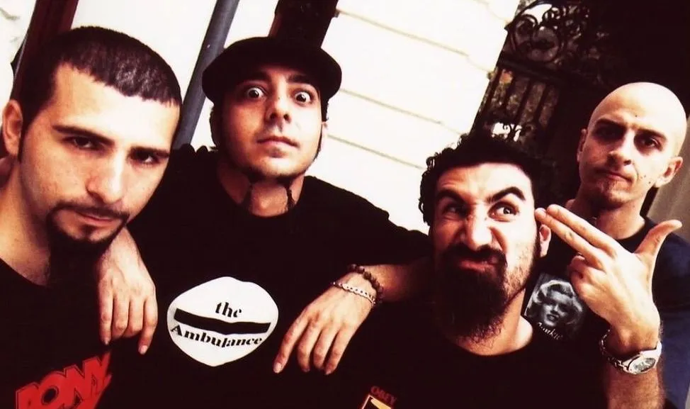

SOAD Show (System Of A Down) - Melhores Momentos
Banda norte-americana fará, ao todo, cinco shows no Brasil com a "Wake Up Tour"

Banda System of a Down no material de divulgação do álbum "Toxicity" • William
Hammes
O System Of A Down começa nesta terça-feira (6) a perna brasileira da “Wake Up
Tour”.
A banda norte-americana abre a sequência de shows com uma apresentação em Curitiba e
tem outros
quatro concertos
agendados para os próximos dias: um no Rio de Janeiro e três em São Paulo.

Shavo Odadjan, baixista do System Of A Down "Tour Wake Up - 2025" • Júlia
Pereira/Estadão
A apresentação tem início previsto para as 21h, no Allianz Parque.
A banda ainda se apresenta mais uma vez na capital paulista, no Autódromo
de Interlagos, na próxima quarta-feira, 14 - também sem a confirmação do
setlist exato por enquanto.